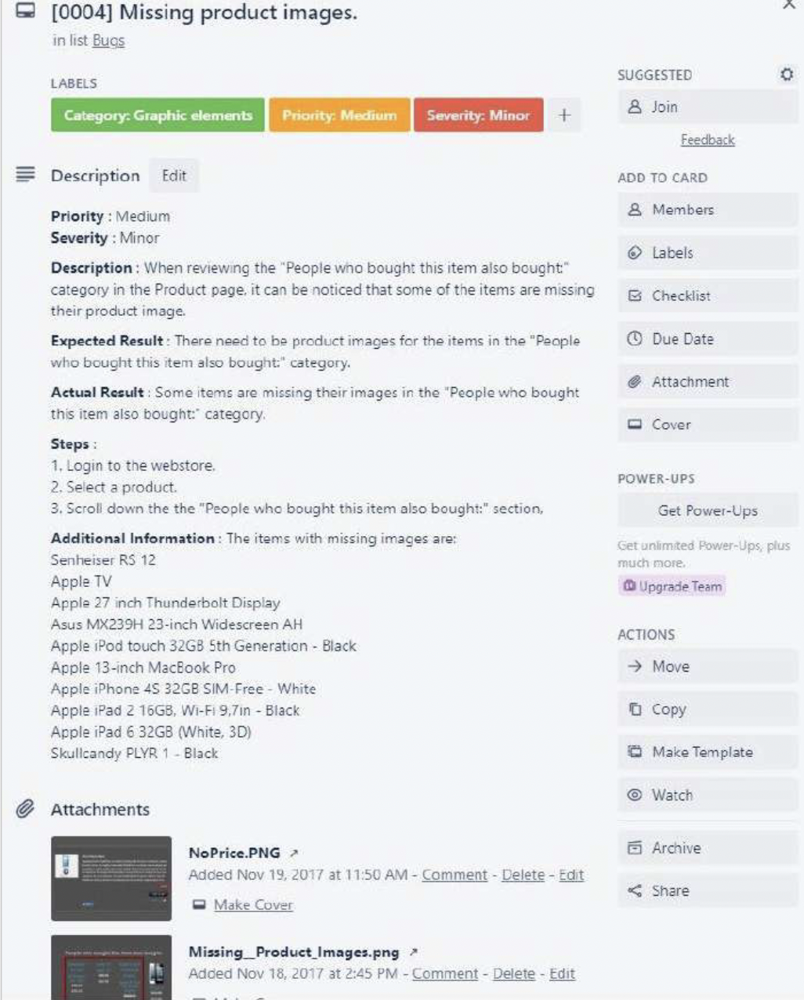

- Smoke testing →
- Acceptance criteria →
- Regression testing →
- Test case →
- Edge case →
a) A bug that is uncommon for users to encounter
b) A set of predefined requirements that must be met in order to mark a user story complete (Agile concept)
c) A part of a test scenario which describes an action performed on a system to determine if it satisfies software requirements and functions correctly
d) A type of software testing to confirm that a recent program or code change has not adversely affected existing features
e) A type of software testing that determines whether the deployed build is stable or not
- → e
- → b
- → d
- → c
- → a
Smoke testing — димове тестування (базова перевірка стабільності білда)
Acceptance criteria — критерії прийняття
Regression testing — регресійне тестування
Test case — тест-кейс, сценарій тестування
Edge case — крайній випадок
- You run a test to see if all the buttons on a webpage are working. →
- A UI issue occurs when the user checks all available checkboxes while viewing the web page in the Safari browser. →
- When the user is on the pricing page, they should be able to choose between three different pricing options or click the "book a free consultation" button which will take them to a contact form. →
- Check customer login with invalid password. →
- You run tests to determine if a reported login bug has been fixed. →
- Smoke testing
- Edge case
- Acceptance criteria
- Test case
- Regression testing
- Which of these testing types does your team rely on most, if any?
- Have you ever shipped something that later broke because regression testing wasn't done?

Read the text below about mobile web statistics and responsive design. What do you notice about the highlighted verbs?
According to BrightEdge, smartphones and tablets are responsible for 57% of all US online traffic. But, using apps takes 89% of the time consumers spend on their mobile devices, and just 11% is spent in a browser. BrightEdge also indicates that brands with which users have had a positive mobile experience will be recommended in 69% of cases. These are just a few noteworthy mobile usage statistics — many more have been compiled by Blue Corona.
Most businesses today have a traditional website. Traditional websites were built for desktop computers with large screens.
Screens for most mobile devices are a fraction of the size of a regular monitor and this impacts many design points. Usually, in mobile-friendly websites, everything is simplified (navigation menus, smaller pictures, form elements, etc.) so they can be handled the same way across all electronic devices. "Responsive websites," are created to automatically adjust to the end user's electronic device, browser, and settings, while optimizing the overall user experience. A responsive website can be defined as a mobile-friendly website — but it keeps more of the look-n-feel UI/UX of a traditional website.
All highlighted verbs are in the passive voice — the focus is on the action/result, not on who performs it (we don't always know or care who did the action).
- The passive voice is formed with the verb and the past participle.
- To say who or what performs the action, we use the preposition .
We use passive when we want to say:
a) What something or someone does
b) What happens to something or someone
- to be
- by
| Present Simple | Past Simple | Future Simple | Present Perfect | Modal verbs | |
|---|---|---|---|---|---|
| To be + past participle | I am asked this question all the time. | I was offered a job. | The bug will be reported. | The requests have been made. | This can be done. |
| The app is updated. | The design was accepted. | The users will be redirected to that page. | The issue has been resolved. | The bug should be fixed. | |
| The meetings are postponed. | The test cases were written. | The changes might be required. |
Пасивний стан утворюється: to be (у потрібному часі) + дієприкметник минулого часу (past participle / 3-тя форма дієслова).
Використовуємо пасив, коли: важливіший результат дії, ніж хто її виконав; виконавець невідомий, очевидний або неважливий; хочемо звучати більш формально/об'єктивно (типово для новин, звітів, технічної документації).
Якщо все ж треба вказати виконавця — додаємо by + виконавець: The bug was fixed by the QA team.
Приклад активного → пасивного: Someone fixed the bug. → The bug was fixed (by someone). — підмет і додаток міняються місцями, а фокус зміщується на "bug".
- Name 2 Big Tech companies that are based in the US. What are they known for?
- Talk about the best piece of advice you have ever been given.
- Think about 2 new products or inventions that can be created in the near future.
- The first ever VCR (Video Camera Recorder), which in 1956, was the size of a piano. (is made/was made)
- The 30th of November as "Computer Security Day". (is known/was known)
- Sir Isaac Newton underneath a tree on the very first Apple logo. (is featured/was featured)
- In 1994, the company who had a patent on GIFs tried to charge a fee for using GIFs. The PNG as an alternative, and the company backed down. (was invented/is invented)
- The grass at Google HQ . It is eaten by goats. (isn't mowed/haven't mowed)
- Bill Gates' house on a Macintosh Computer. (designs/was designed)
- CD's from the inside to the outside edge. (is read/are read)
- was made
- is known
- is featured
- was invented
- isn't mowed
- was designed
- are read
- Ninety percent of text messages (read) within three minutes of being delivered.
- The electric chair (invent) by a dentist named Alfred Southwick.
- The Apple II had a hard drive of only 5 megabytes when it (launch) in June 1977.
- If you (follow) by million or more people on Twitter, you can be called a Twillionaire.
- Hewlett Packard, Microsoft, as well as Apple, have one not so obvious thing in common — they (start) in a garage.
- Two hundred and twenty million tons of old computers and other technology devices (trash) in the United States each year.
- On average, 2.9 devices (carry) on users at all times.
- are read
- was invented
- was launched
- are followed
- were started
- are trashed
- are carried
Which of these tech facts surprised you the most?
Example: Surgeons who grew up playing video games make 37% fewer mistakes. → 37% fewer mistakes are made by surgeons who grew up playing video games.
- Doug Engelbart created the very first wooden computer mouse in 1964.
→ - In June 1983, Apple released Lisa, its first commercial computer.
→ - Amazon now sells more Ebooks than printed books.
→ - Google added Klingon as a language option in 2002.
→ - People make over 35 billion Google searches every month.
→ - Someone sent the first commercial text message in December 1992.
→ - On eBay, people make around $680 worth of transactions every second.
→
- The very first wooden computer mouse was created by Doug Engelbart in 1964.
- In June 1983, Lisa, Apple's first commercial computer, was released.
- More Ebooks are now sold than printed books (by Amazon).
- Klingon was added as a language option by Google in 2002.
- Over 35 billion Google searches are made every month.
- The first commercial text message was sent in December 1992.
- On eBay, around $680 worth of transactions are made every second.
STAR stands for:
Situation Task Action Result
behavioral interview questions — поведінкові співбесідні запитання (де просять розповісти про реальний випадок з досвіду)
come in handy — стати в пригоді
Here is an example. Software developer Sally explains how she overcame an obstacle during one of her recent projects:
| Situation | Task |
|---|---|
| During my last project we had to find a way to streamline our process to meet a deadline. | Our clients changed the requirements and we needed to develop a workaround so that we could implement all the features on time. |
| Action | Result |
|---|---|
| First, we held a brainstorming session where we generated ideas on how we can work faster. At this point, we decided to switch to a different language which all of us could understand. Then, I suggested implementing some code walkthroughs and pair programming techniques. Finally, I recommended some cost-effective tools we could use to help us increase our productivity. | In the end, we managed to meet the deadline and our app was published on the App store within the following two weeks. |
to streamline our process — оптимізувати/спростити наш процес
workaround — обхідне рішення
First / At this point / Then / Finally / In the end — слова-конектори для послідовності розповіді: спочатку / на цьому етапі / потім / нарешті / зрештою
- Why do you think interviewers like the STAR technique so much?
- Which part (Situation, Task, Action, or Result) do you find hardest to explain clearly?
Talk about the last time something didn't go according to the plan in your project using the STAR technique.
Make sure to answer the questions:
- What went wrong?
- What pitfalls or problems did you come across?
- How did you manage to solve the problem?
| Phrase | Meaning | Example |
|---|---|---|
| Turn out | to happen / to appear to be, in the end | "I thought this project was going to be easy, but it turned out to be a very difficult one." |
| Find out | to learn some new information (not the same as "know") | "I found out that my colleague is actually sick and not trying to skip work." |
| Figure out | to understand something / to come to a solution | "We had a really difficult task, but we managed to figure out a solution to this task." |
| End up | to eventually do something (+ -ing) / to eventually arrive somewhere / to eventually become something | "I ended up choosing front-end." / "We ended up in Paris." / "We ended up friends eventually." |
| Come up with | to create something (an idea, a solution) | "Our team came up with a really interesting solution to this problem." |
| It happened that | a simple way to introduce how a story began | "It happened that I was recommended for this position by my friend." |
Turn out — виявитися, стати відомим зрештою
Find out — дізнатися (нову інформацію)
Figure out — розібратися, зрозуміти, знайти рішення
End up — зрештою опинитися / стати / зробити щось (несподівано чи як підсумок)
Come up with — придумати, запропонувати (ідею/рішення)
It happened that — так сталося, що…
- We a workaround after two days of debugging.
- The interview seemed easy at first, but it be much harder than I expected.
- I that our release had been delayed only when I checked Jira this morning.
- We couldn't decide between two candidates, so we hiring both.
- I was the only person on the team who had used that framework before.
- It took a while, but the QA team finally what was causing the crash.
- came up with
- turned out to
- found out
- ended up
- It happened that
- figured out
Each sentence uses the right phrase but the wrong verb form after it. Correct it.
- I ended up to choose backend development. →
- We ended up work overtime for the whole week. →
- She ended up chose a completely different career path. →
- I ended up choosing backend development. (end up + -ing, not "to")
- We ended up working overtime for the whole week.
- She ended up choosing a completely different career path.
Tell a short story (real or made up) about a work situation using at least 4 of the 6 phrases above. Combine this with the STAR technique from earlier if you'd like — Situation, Task, Action, Result.
Look at the example of a good bug report. What makes it good? It's concise but doesn't miss any key details and contains all the necessary elements of a proper bug report, namely:
- Title / summary (missing product images)
- Severity/Priority
- Description
- Expected Result
- Actual Result
- Steps to reproduce
- Environment
- Visual Proof (screenshots, videos, text)

Let's take a closer look at each section of a bug report.
| Section | Description |
|---|---|
| Summary (Title) | The goal is to make the report searchable and uniquely identifiable. Think of it as a subject line for emails — be specific enough to provide a complete description of the problem in a nutshell. Bad: Bug. Good: Error 5C79 when confirming request. |
| Description | A concise (1–2 sentences) overview of the bug itself. A good description lets the reader understand what the actual issue is and how severe it is. Ex: The headline text size and color on the pricing page don't match the original designs. Tip: stick to Present Simple. |
| Expected Result | A description of the proper behavior that should happen if the bug is fixed. Ex: New email notification should be displayed right on the email arrival. Tip: we tend to use passive voice — should + be (past participle) or is/are + past participle. |
| Actual Result | A description of the current "buggy" behavior. Tip: for convenience, it's possible to omit "to be" ("not shown" instead of "is not shown") and articles where implied ("error displayed"). |
| Steps to Reproduce | Lay out the steps in an easy-to-follow way so the developer can easily reproduce the bug. Tip: double-check your repro steps to make sure you haven't left out any important details. |
| Environment | Include the environment setup and configuration info — OS, system build, platform etc. Add any additional info (URL, crash data, regression range etc.) and attach all relevant files. |
searchable — такий, що легко знайти пошуком
identifiable — впізнаваний, ідентифікований
in a nutshell — коротко, в двох словах
severe — серйозний, критичний (про баг)
- Which section of a bug report do your developers usually complain is missing or unclear?
- Does your team use Present Simple or another tense when writing descriptions? Have you noticed this pattern before?
It's time for you to write a bug report of your own! It can be an actual bug you've observed or a fictional bug you've made up.
Make sure to include: Summary · Severity/Priority · Description · Expected Result · Actual Result · Steps to reproduce · Environment · Additional information
| Term | Meaning |
|---|---|
| Setback | something that happens that delays or prevents a process from developing |
| URL (Uniform Resource Locator) | an address that shows where a particular page can be found on the World Wide Web |
| Bug report | something that stores all information needed to document, report and fix problems occurred in software or on a website |
| Run (a test) | perform (a test) |
| Bug | an error in a computer program or system |
| Feature | a unit of functionality of a software system |
| Agile software development | a set of practices intended to improve the effectiveness of software development professionals, teams, and organizations |
| User story | an informal, natural language description of features of a software system written from the perspective of an end user |
| Argument | a value that is passed between programs, subroutines or functions |
| Iteration | a process where a set of instructions or structures are repeated in a sequence a specified number of times or until a condition is met |
Setback — затримка, невдача, що гальмує процес
URL — адреса сторінки в інтернеті
Bug report — звіт про баг
Run (a test) — запустити/виконати тест
Bug — помилка в програмі
Feature — функція, елемент функціональності
Agile software development — гнучка методологія розробки ПЗ
User story — користувацька історія (опис функції з точки зору користувача)
Argument — аргумент (значення, що передається між функціями)
Iteration — ітерація, повторення послідовності дій